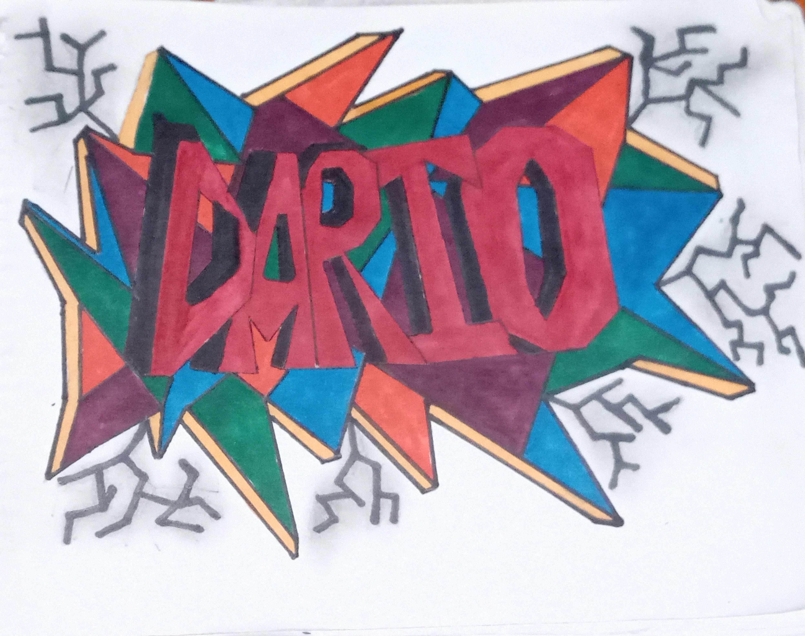
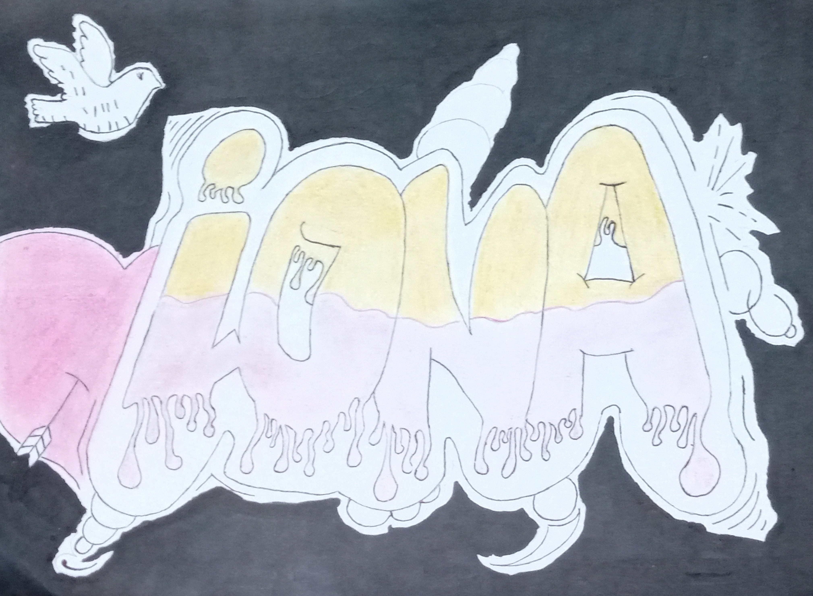

Se llama pintada, grafito o grafiti a una modalidad de pintura libre, destacada por su ilegalidad, generalmente realizada en espacios urbanos. Su origen se remonta a las inscripciones que han quedado en paredes desde los tiempos del Imperio Romano, especialmente las que son de carácter satírico o crítico
-
Firmas o tags (en inglés)
Se trata de letras con la firma del autor que siempre deben muy estilizadas y enlazadas. Se hacen con aerosol y rotuladores. -
Latrinalia
También se conoce como grafiti privado. Se trata de los mensajes y dibujos escritos por las personas en el interior de los baños públicos. -
Mensajes o lemas
Se trata de sentencias, eslóganes o frases escritas para difundir un mensaje. Pueden estar inspiradas en la cultura del grafitero, en problemas de actualidad, en comentarios propios de sus obras o sus percances, etc.
|  |  |